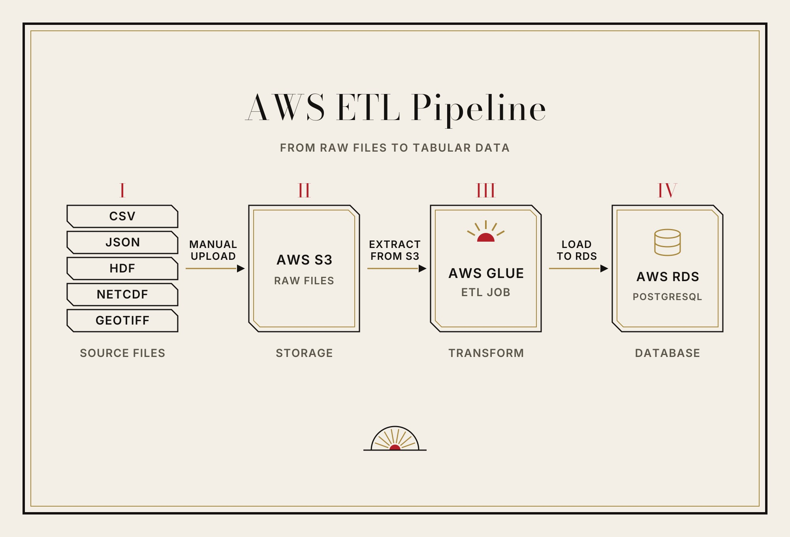

AWS ETL Pipeline
Turning scattered earth science files into one database the Data Visualization team can query.


The Problem
Earth science data comes in many formats and from many places, so it is hard to compare or visualize. The data visualization team needed everything in one queryable location.
Extract
Datasets for different earth layers, such as GeoTIFF for elevation and JSON for well logs, arrived through different channels, some sent in Slack and some shared through Dropbox links. They were gathered and uploaded into a single AWS S3 bucket.
Transform
Four AWS Glue jobs each handle one type of data and write Parquet files.
- Elevation rastersReads GeoTIFF elevation tiles, keeps every tenth pixel in each direction, drops “no data” pixels and converts each pixel to longitude and latitude. Output: one Parquet file per tile
- Well logsFlattens one JSON file per well into one row per measurement curve, with the well ID, unit, depth range and number of data points. Files that fail are logged and skipped. Output: colorado_well_logs.parquet
- Joint inversion modelReads 3D cell-center coordinates and two estimated values per cell, density and magnetic susceptibility, from a NumPy archive. Output: colorado_joint_inversion.parquet
- USGS map filesBuilds a metadata inventory of an extracted folder: file path, name, type, size and last-modified date. Output: gems_file_inventory.parquet
Load
The results go into a PostgreSQL database on AWS RDS, so the Data Visualization team can query the data directly with SQL.
What I’d do next
[One or two sentences on improvements, such as scheduling the jobs.]